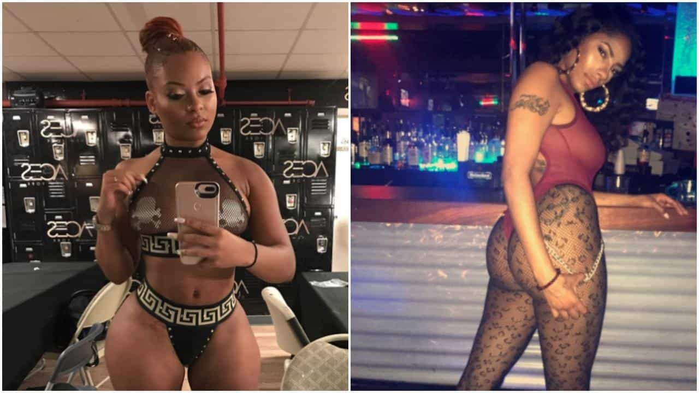

This account syndicates news from other media outlets.


Wealthy Wall Street finance types are going to need to find a new way to entertain their wealthy asset-management clients – at least for the time being – because the strippers are going on strike.
The source of the dispute is a simmering dispute between New York City dancers and a growing cohort of Instagram-famous “startenders” who wear outfits that are almost as revealing as the strippers’ outfits, but also promote the club on social media – bringing in a loyal following of customers – while also serving drinks.
The club owners, not wanting to lose the revenue that the bartenders are bringing in, have stood idly by while the bartenders’ influence inside the clubs has grown, while the strippers, who typically pay clubs a house fee to dance, are seeing their nightly earnings dwindle.
The result? One stripper who spoke to the post said she used to make $1,000 a night. But now she’s pulling in closer to $400.
“No dancer in New York City is making $1,000 a night anymore.”
Of course, the strike is still in its early stages. But according to the Washington Post, it’s quickly gaining support.
Panama is a stage name and she declined to provide her real name. She is for real, though, said Mona Marie, the owner of a New York dance studio where many dancers train called Poletic Justice. And, she says, so are their mounting grievances, so much so that some of them have declared a stripper’s strike. It’s unclear how many dancers are participating and what the impact on the clubs has been. The strike is about a week old.
This isn’t your normal labor dispute between employees and employers. It’s between bartenders and strippers, on the one hand, and between strippers and club promoters on the other, who tend to side with the bartenders because, after all, it’s the bartenders who they believe are bringing in the customers via social media.
As it turns out, the advent of photo-sharing apps like Instagram and Snapchat has violently disrupted the business of being an exotic dancer. To compensate for the drop in their nightly take at NYC clubs, the dancers now travel more because they can earn more money at clubs down South, or clubs in smaller towns where girls from fresh faces can earn more money.
Because of the club owners’ indifference, many of the best dancers to skip NYC altogether, one stripper said.
A dancer named Gizelle Marie is one of the strike organizers. “The [New York City] bartenders tell the customers not to tip us. They block us from the customers while we dance or they are sweeping our money off the stage while we dance,” she told The Post. Several videos taken from inside different clubs posted on Instagram appear to support her claim.
Gizelle Marie says most customers can’t tell bartenders apart from strippers anymore because they all basically dress the same and “the club promoters and owners encourage the behavior.”
Gizelle Marie got the idea to mobilize the NYC Strippers Strike after she traveled to Washington last month to dance at a club during Howard University’s homecoming.
“I made a lot of money. It made me think to myself that a lot of the great dancers aren’t dancing in New York anymore. They moved away to other cities to work or they just completely stopped,” Gizelle said.
Within a couple days, she posted the word on Instagram and 30 strippers gathered last week at Poletic Justice in the Bronx for a meeting.
Panama said, “The dancers used to be the most respected in the club, and now it’s like the dancers are at the bottom of the barrel. And the dark-skinned dancers are all the way at the bottom of the barrel.”
Among other considerations, the striking strippers are demanding a reduction in house fees and that black dancers also have the opportunity to be hired as bartenders.
In the past, the dancers have mostly been silent about their issues out of fear, she said. “People were in fear of losing their jobs if they spoke out. A lot of these women have other careers, are parents, are putting themselves through school so that fear factor absolutely played a part in it.”
They want their house fees reduced. They want bartenders to pay house fees, too. The black dancers want the opportunity to be hired as bartenders. And they want the bartenders to stop stealing their money.
They wish as well that management would stop pitting the strippers and bartenders against each other. The dancers believe everyone can work together harmoniously if rules are established.
“All we want is respect at the end of the day,” Gizelle Marie said. “If it doesn’t change by us going to the owners we’ll take further matters legally.”

However, the nascent strike is facing one major obstacle: Club promoters’ reaction to the strike ranges from indifferent to downright hostile.
Club promoters are not sympathetic to the strippers’ demands. Sean Simmons, promotional director for Aces New York, said the strike is “nonsense.” He said there is no racism in the nightclubs and that he employed “all ethnicities” as dancers and bartenders at his club before it was shut down a couple months ago.
“The whole industry itself has changed,” Simmons told The Post in a brief phone interview. “Some clubs are bartender-driven, but that’s just because the bartenders are beautiful women.” Simmons said that there should be rules and regulations between dancers and bartenders, but said, “Nothing will come from the strike.”
Still, the women plan to keep fighting.
“No matter how people perceive your work environment, a work environment is a work environment and everybody needs to be respected and treated equally. If there’s something you can do to help or change your establishment, you should do it.”
Don’t Miss: Can Strippers, Pornstars and Live Sex Models Be Good Girlfriends?